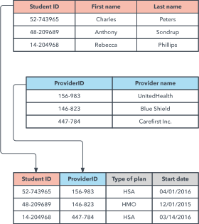

HaB: Introducción a SQL
Por: Fernando Batlle López
Tabla de contenidos del curso
- Introducción
- Bases de datos relacionales
- Modelo Entidad-Relación
- Paso Modelo Entidad-Relación a tablas: Modelo Relacional
- Creación de tablas SQL
- Consultas SQL
Estructura del curso
- Primera clase: Introducción y bases de datos relacionales
- Segunda clase: Modelo Entidad-Relación
- Tercera clase: Modelo Relacional e inicio en SQL
- Cuarta clase: Creación de tablas
- Quinta clase: Consultas
- Sexta y sétpima: Resolución de dudas y resumen
Herramientas que se utilizarán a lo largo de este curso
- SGDB: MySQL Server
- Cliente: MySQL Workbench
- Modelos: Visio (de pago), Dia (libre)
- Herramientas: Notepad++, Excel
Introducción
Punto de partida de un proyecto
¿Dónde empieza?
Bajo la necesidad de un cliente (o incluso de una necesidad propia).
En todo sistema un poco grande, siempre va a ser necesario la persistencia de datos.
Y los requisitos vendrán de interactuar con el cliente.
Caso de Estudio
"AllTheMoney Bank"
Llega una cliente a nuestro flamente estudio de ingenieria y nos dice:
Tengo un negocio, pero... ¿Dónde y cómo almaceno mis datos?
Mis clientes no son unos cualesquiera...
Conceptos clave de la frase (1)
¿Dónde y cómo almaceno mis datos?
Conceptos clave de la frase (2)
¿Dónde y cómo almaceno mis datos?
Cualquier información puede ser un dato
En el mundo de bases de datos (computación), esos datos deben ser digitales.
A día de hoy, un coche no se puede digitalizar, excepto en las películas de ciencia ficción.
La mayoría de la información de la banquera, se puede digitalizar, así que va por buen camino.
La que no se pueda almacenar, quedará fuera del alcance, o se deberá procesar de alguna manera.
Intentos por parte del cliente
Uno de los problemas del mundo de la programación es que desde fuera no se sabe valorar lo que un sistema o programa conlleva, y su dificultad.
P.e: un coche o un edificio son palpables (y grandes). Una aplicación como Spotify... no.
En muchas ocasiones os encontraréis que, al darles un presupuesto, os dirán frases del estilo a:
Mi sobrino sabe de eso y lo hace más barato.
Por tanto, intentarán buscar soluciones alternativas.
Intentos por parte del cliente
Primer intento: Fichero de texto

Intentos por parte del cliente
Primer intento: Fichero de texto
Pros
- Fácil de implementar.
- No requiere conocimiento especializado alguno.
- Inmediato.
Intentos por parte del cliente
Primer intento: Fichero de texto
Contras
- Difícil de manejar cuando hay grandes cantidades de datos.
- Difícil de hacer consultas.
- Propenso a errores de integridad.
- No colaborativo.
- Y muchos más.
Intentos por parte del cliente
Primer intento: Fichero de texto

Intentos por parte del cliente
Segundo intento: Fichero de Excel

Intentos por parte del cliente
Segundo intento: Fichero de Excel
Pros
- Potente. Posee herramientas para hacer cálculos.
- Ampliamente usado en contabilidad y en otros entornos.
- Bastante inmediato.
Intentos por parte del cliente
Segundo intento: Fichero de Excel
Contras
- Requiere ya de un conocimiento mínimo.
- Permite consultas básicas, pero no complejas.
- No colaborativo. Excepto en formato web.
- Roles de usuario limitados (editor y visualizador).
- Difícil de estructurar.
Intentos por parte del cliente
Segundo intento: Fichero de Excel

Intentos por parte del cliente
Segundo intento: Fichero de Excel
Ejemplo de fallo grave


Intentos por parte del cliente
Ambos intentos acaban francasando en su finalidad.
Se da cuenta que debe acudir a personal especializado (vosotros).
Bases de datos (1)
Las limitaciones anteriores requieren de algún sistema diseñado específicamente para atajar estos problemas.
¿Qué es una base de datos?
Se llama base de datos, o también banco de datos, a un conjunto de información perteneciente a un mismo contexto, ordenada de modo sistemático para su posterior recuperación, análisis y/o transmisión.
Bases de datos (y 2)
Ficheros vs BBDD
| Ficheros | BBDD | |
|---|---|---|
| Tipo de entidades | Única entidad | Varias entidades |
| Interrelaciones | No se interrelacionan | Mecanismos de interrelación |
| Redundancia | Ad-hoc para cada aplicación | Compartida diferentens aplicaciones |
| Usuarios | Único | Compartido |
Conceptos fundamentales en bases de datos (1)
- Campo o atributo: Área de almacenamiento para almacenar datos de un tipo específico. No pueden almacenarse tipos diferentes una vez definido.
- Registro o tupla: Colección de datos relacionados. Dichos datos pueden ser de diferentes tipos.
- Tabla o archivo: Colección de registros.
Conceptos fundamentales en bases de datos (y 2)
Ejemplo

Clasificación de bases de datos (1)
Según la variabilidad de la base de datos
- Bases de datos estáticas: únicamente de lectura (p.e. datos históricos).
- Bases de datos dinámica: la información almacenada se modifica con el tiempo, permitiendo operaciones como actualización, borrado y edición de datos.
Clasificación de bases de datos (y 2)
Según el contenido
- Bases de datos bibliográficas
- Bases de datos de texto completo
- Directorios
- Bases de datos o "bibliotecas" de información química o biológica
Resumen: Bases de datos
- Concepto de base de datos: conjunto de información estructurada, que será analizada y manipulada.
- Diferencias entre BBDD y ficheros.
- Conceptos fundamentales de una BD: atributo, tupla y tabla.
- Diferentes clasificaciones.
Bases de Datos Relacionales
¿Qué son las bases de datos relacionales?
Son un tipo de bases de datos donde la información se organiza en fragmentos más pequeños que se relacionan entre ellos.
Esta relación se lleva a cabo mediante identificadores.
Su principio: ACID.
- Atomicidad
- Consistencia
- Aislamiento
- Durabilidad
Estas propiedades permiten a los sistemas ser más robustos, seguros y menos vulnerables ante fallos.
¿Qué son las bases de datos relacionales?
Atomicidad
Es la propiedad que asegura que una operación se ha realizado o no, y por lo tanto ante un fallo del sistema no puede quedar a medias.
Se dice que una operación es atómica cuando es imposible para otra parte de un sistema encontrar pasos intermedios.
Si esta operación consiste en una serie de pasos, todos ellos ocurren o ninguno.
Por ejemplo, en el caso de una transacción bancaria o se ejecuta tanto el depósito y la deducción o ninguna acción es realizada.
¿Qué son las bases de datos relacionales?
Consistencia
Es la propiedad que asegura que sólo se empieza aquello que se puede acabar.
Por lo tanto, se ejecutan aquellas operaciones que no van a romper la reglas y directrices de integridad de la base de datos.
Se convierte un estado coherente de datos en otro estado de datos igualmente coherente.
¿Qué son las bases de datos relacionales?
Aislamiento
Es la propiedad que asegura que una operación no puede afectar a otras.
Esto asegura que la realización de dos transacciones sobre la misma información nunca generará ningún tipo de error.
Las operaciones se comportan como si cada una fuera la única que se ejecuta en el sistema.
¿Qué son las bases de datos relacionales?
Durabilidad
Es la propiedad que asegura que una vez realizada la operación, ésta persistirá y no se podrá deshacer aunque falle el sistema.
¿Qué son las bases de datos relacionales?
Además, Las bases de datos relacionales se caracterizan por su naturaleza autodesciptiva.
Los programas de aplicación acceden a información específica, donde se describe la estructura de los datos (Metadatos).
Los metadatos permiten a las herramientas a "leer" todo tipo de BBDD independientemente de su naturaleza (bancos, automoción...).
¿Qué son las bases de datos relacionales?
¡Importante!
Hay dos grandes entidades en una base de datos.
- Los datos en sí (junto con sus metadatos).
- El programa (conjunto de herramientas) que gestiona y consulta esos datos.
La comunicación entre ambos es posible gracias a la abstracción de los datos y sus metadatos.
Sistemas gestores de bases de datos (1)
Un sistema gestor de base de datos (SGBD) es un conjunto de programas que permiten el almacenamiento, modificación y extracción de la información en una base de datos.
A través de herramientas específicas de consulta o bien mediante aplicaciones al efecto.
Sistemas gestores de bases de datos (2)
Tareas y funciones
- Permite la compartición de los datos entre múltiples sistemas y/o usuarios.
- Además, lo permite de manera concurrente. Dos usuarios pueden consultar los datos a la vez.
- Diferentes vistas de los datos: dos usuarios pueden querer ver distinta información.
- Cambio de la estructura de la base de datos sin afectar a los datos almacenados.
Sistemas gestores de bases de datos (y 3)
Tareas y funciones (y 2)
- "Enforcer". Se encarga de controlar el acceso a los datos según los distintos Roles y permisos de los usuarios.
- Copias de seguridad.
- Mantenimiento de integridad de los datos (a través, por ejemplo, de Restricciones).
- Recuperación de los datos ante un fallo de sistema.
Control de usuarios
No todos los usuarios deberían poder acceder a toda la BD.
Control selectivo:
- Sólo usuarios autorizados. Si no se tiene una "Cuenta", no se accede a los datos.
- Sólo a ciertas partes de la base de datos. Un administrador puede ver todo, mientras que un visualizador, solo ciertas partes.
- Sólo para realizar ciertas operaciones con los datos. P.e. el admin puede crear otros usuarios, el resto no.
Implementaciones de bases de datos relacionales
- MySQL (MariaDB)
- Oracle
- SQL Server
- Postgres
Otros conceptos importantes de las bases de datos relacionales
Claves (KEY)
Las claves son campos que identifican a las tablas. Puede ser un único campo o un grupo de campos.
Hay varios tipos:
- Claves Primarias: PRIMARY KEY
- Claves foráneas: FOREIGN KEY
- Claves índice: INDEX
Claves Primarias: PRIMARY KEY
Una clave primaria es una clave única.
Define unívocamente a todos los demás atributos de la tabla para especificar los datos que serán relacionados con las demás tablas.
Puede estar conformada por uno o más campos de la tabla.
Ejemplo, el DNI sería el identificador único de persona.
Claves foráneas: FOREIGN KEY
Una clave foránea es una referencia a una clave en otra tabla, determina la relación existente entre dos tablas.
Las claves foráneas no necesitan ser claves únicas en la tabla donde están y sí a donde están referenciadas.
Ejemplo, los códigos en los paneles de salida en las autopistas.
Ejemplo, todos los libros son "elaborados" por un autor.
Claves índice: INDEX
Las claves índice surgen con la necesidad de tener un acceso más rápido a los datos.
Los índices pueden ser creados con cualquier combinación de campos de una tabla.
Las consultas que filtran registros por medio de estos campos, pueden encontrar los registros de forma no secuencial usando la clave índice
En una guía de teléfonos, los números podrían ser un índice, si se deseara hacer búsquedas por ellos.
Restricciones (CONSTRAINTS) (1)
- Una restricción es una condición que obliga el cumplimiento de ciertas condiciones en la base de datos.
- Permiten implementar reglas en la base de datos.
- Restringen los datos que pueden ser almacenados en las tablas.
- Deben retornar un valor booleano, indicando si los datos satisfacen la restricción o no.
Restricciones (CONSTRAINTS) (2)
Tipos:
- Inherentes a la base de datos relacional. Por ejemplo la unicidad de las Claves Primarias o la existencia de las claves foráneas.
- Definidas por el usuario. Por ejemplo, que un número no pueda ser mayor que siete.
Restricciones (CONSTRAINTS) (3)
Restricciones comunes:
- NOT NULL: el valor del atributo no puede ser NULL.
- UNIQUE: asegura que todos los valores de la columna son distintos.
- CHECK: todos los valores cumplen la condición definida.
- DEFAULT: inicializa un valor por defecto si no se proporciona ninguno.
Restricciones (CONSTRAINTS) (y 4)
Ejemplo:
Si se define valor como un atributo que acepta un número entero y especificamos la siguiente condición:
CHECK(valor > 12)
Si intentamos almacenar un elemento cuyo valor=5, el sistema devolverá un error y no permitirá la operación.
Entorno simplificado de un sistema de base de datos

Principales actores de un sistema de base de datos
- Administrador de la base de datos (ABD).
- Diseñadores de la base de datos.
- Usuarios finales.
- Ingenieros de software.
- Diseñan e Implementan los Módulos e Interfaces del SGBD.
- Operadores y Personal de mantenimiento.
- Desarrolladores de herramientas.
Administrador de la base de datos (ABD)
Responsable de administrar los recursos del SBD (nivel técnico):
- BD.
- SGBD.
- Otro Software (aplicaciones/programas de acceso).
Administrador de la base de datos (ABD)
Las funciones del ABD incluyen:
- Definir/Modificar la estructura de la BD y restricciones de los datos.
- Crear/Modificar estructuras de almacenamiento y métodos de acceso.
- Conceder/Denegar permisos de acceso y controlar dicho acceso a datos (seguridad de la BD).
- Definir planes de copias de seguridad de los datos de la BD.
- Garantizar el funcionamiento correcto del sistema y proporcionar servicio técnico al usuario (respuesta lenta del sistema...).
- Adquirir los recursos software y hardware necesarios.
Diseñadores de la base de datos
Antes de implementar la BD, interactúan con sus futuros usuarios:
- Recogen y comprenden sus necesidades y objetivos --- Requisitos.
- Identifican datos que almacenar en la base de datos.
- Eligen estructuras para representar y almacenar los datos.
- Finalmente, diseñan la BD que satisface las necesidades de todos los usuarios.
Usuarios finales
Distintos tipos:
- Ocasionales o Sofisticados:
- Acceso esporádico y distinto cada vez; usan lenguaje de consulta.
- Paramétricos o Normales.
- Accesos constantes, repetitivos.
- Usan “transacciones programadas” para ellos.
- Avanzados o Especializados.
- Implementan sus propias aplicaciones especializadas para cumplir sus complejos requisitos.
- Ingenieros, científicos, analistas de empresa, ...
- Autónomos.
- Usan BD personales, a través de aplicación/paquete comercial específico.
Ingenieros de software
Analistas de sistemas y Programadores de aplicaciones:
- Conocen perfectamente capacidades y recursos del SGBD.
- Analistas.
- Determinan necesidades de procesamiento de los usuarios finales.
- Especifican conjuntos de operaciones que satisfacen esas necesidades.
- Programadores.
- Implementan estas especificaciones -> Programas de aplicación.
- Prueba, depuración, documentación y mantenimiento de programas.
Diseñadores e Implementadores del SGBD
- No están interesados en el contenido de la base de datos .
- Diseñan e Implementan los Módulos e Interfaces del SGBD.
Operadores y Personal de mantenimiento
- Tampoco están interesados en el contenido de la base de datos .
- Se encargan de manterner y operar todo el entorno, tanto hardware como software.
Desarrolladores de herramientas
- Diseñan e implementan paquetes software que:
- Facilitan diseño y uso de los SBD.
- Permiten aumentar el rendimiento de los SBD.
- Herramientas para:
- Diseño de BD, de aplicaciones de BD, de interfaces de usuario...
- Creación de prototipos de aplicaciones de BD.
- Realizar simulaciones y generar datos de prueba.
- Supervisión de rendimiento del sistema.
SQL: Structured Query Language
SQL: lenguaje de consulta estructurado.
Es un lenguaje declarativo de acceso a bases de datos relacionales que permite especificar diversos tipos de operaciones en ellas.
Mediante manejo del álgebra y el cálculo relacional se permite efectuar consultas con el fin de recuperar la información así como hacer cambios en ella.
Explota la flexibilidad y potencia de los sistemas relacionales y permite así gran variedad de operaciones.
SQL: Structured Query Language
- DDL (Data definition Language)
- Lenguaje de definición de datos
- Esquema conceptual
- Permite crear, definir y estructurar la Base de datos (Sus entidades y relaciones)
- P.e. en SQL: CREATE o DROP
- DML (Data Management Language)
- Lenguaje de manipulación de datos
- Permite acceder a los datos. No permiten cambios sobre la estructura
- P.e. en SQL: INSERT o SELECT
- DCL (Data Control Language)
- Lenguaje de control de datos
- Permite crear, definir usuarios, roles y permisos.
- P.e. en SQL: CREATE USER, GRANT PRIVILEGES
Para poder usar el DML, previamente se debe de haber utilizado el DDL.
Ejemplos SQL
Ejemplo DDL: Creación de una tabla
mysql> CREATE TABLE precios(id TINYINT PRIMARY KEY, precio DECIMAL(8, 2), fecha TIMESTAMP);
Ejemplo DML: Inserción y selección de datos
mysql> INSERT INTO precios(id, precio) VALUES(1, 234.34);
mysql> INSERT INTO precios(id, precio) VALUES(2, 344.12);
mysql> SELECT * FROM precios;
+----+--------+---------------------+
| Id | precio | fecha |
+----+--------+---------------------+
| 1 | 234.34 | 2020-10-31 12:12:25 |
| 2 | 344.12 | 2020-10-31 12:15:10 |
+----+--------+---------------------
Arquitecturas de BD
La arquitectura de todo sistema de BD está muy condicionada también por las características del sistema informático sobre el que se ejecuta, y en especial por los siguientes aspectos:
- La conexión en red de diferentes computadoras.
- El procesamiento paralelo de consultas dentro de una misma computadora.
- La distribución de los datos en diferentes computadoras, incluso alejadas entre sí.
Arquitecturas de BD
Debido a la evolución tecnológica, se han creado nuevas arquitecturas que se aleja de los sistemas centralizados en una sola computadora.
Estos distintos tipos permiten dar respuesta a distintas necesidades de usuarios y sistemas:
- Sistemas cliente-servidor.
- Sistemas paralelos.
- Sistemas distribuidos.
Arquitecturas de BD
Cliente - servidor
El servidor permite llevar a cabo las funciones propias del SGBD, se puede decir que el servidor es en sí, el SGBD.
Un cliente es cada consumidor de recursos de la base de datos.
Los datos se envían al servidor. Éste los procesa y devuelve el resultado obtenido.
El usuario no tiene porqué estar en la misma máquina (de hecho, suelen estar en servidores separados).
Mucho más eficiente, ya que se dividen las tareas que los distintos sistemas realizan.
Son sistemas escalables y modulares, es decir, se puede aumentar la cantidad de servicios prestados por los ordenadores.
Arquitecturas de BD
Cliente - servidor
Se pueden clasificar en tres categorias:
- Las pequeñas, sin servidor. Para max 10 clientes concurrentes. Ejemplo: MS-Acces.
- Las medianas, con servidor. Para hasta 50 clientes concurrentes. Ejemplo: Firebird.
- Las grandes, con servidor. Para hasta miles de clientes concurrentes. Ejemplo: MySQL, Oracle, SQL Server.
Arquitecturas de BD
Bases de datos distribuidas
Cuando una cliente accede a datos de distintos servidores, se denomina Bases de Datos Distribuidas.
En estos sistemas la base de datos está distribuida en más de un servidor.
Los usuarios no tienen por qué conocer la ubicación física de los datos con los que trabajan y han de acceder simultáneamente a varios servidores.
Arquitecturas de BD
Bases de datos distribuidas
Hay buenas razones para implementar BD distribuidas:
En estos sistemas la base de datos está distribuida en más de un servidor.
- Compartición de la información y autonomía local: cada nodo controla (hasta cierto punto) la administración de los datos almacenados localmente.
- Fiabilidad y disponibilidad: es posible seguir trabajando e incluso recuperar nodos en caso de fallo.
- Agilización del procesamiento de consultas: se puede dividir las consultas en diferentes subconsultas que se ejecuten en los nodos respectivos.
Resumen
- Bases de datos relacionales.
- Componentes de las bases de datos: Datos, Metadatos, SGBD.
- Control de usuarios.
- Las relaciones de las bases de datos: cocepto CLAVE.
- Cómo mantener consistentes los datos: RESTRICCIONES.
- Los actores de las bases de datos.
- Concepto de SQL: DDL y DML.
- Tipos de arquitecturas.
Está bien toda esta teoría...
Pero... ¿Cómo la llevo a la práctica?
Diseño de bases de datos (mediante la aplicación de modelos).
Diseño de bases de datos (1)
El diseño de una base de datos consiste en extraer todos los datos relevantes de un problema.
Saber qué datos están implicados en el proceso que se desea implentar.
En nuestro caso de estudio, qué datos y funcionalidades serán necesarios en el sistema del banco.
Para la extracción de estos datos, se debe realizar un análisis en profundidad del problema:
- Averiguar qué datos son esenciales para la base de datos
- Descartar los que no sean necesarios.
Diseño de bases de datos (2)
Una vez extraídos los datos esenciales se procederá a construir los modelos adecuados.
Es decir, construir, mediante una herramienta de diseño de base de datos, un esquema que exprese con total exactitud todos los datos que el problema requiere almacenar.
Equivalente al plano previo a la construcción de un puento o una presa.
Modelos
Pero, ¿qué son los modelos?
Llamamos modelo a un instrumento que se aplica a una parcela del mundo real para obtener una estructura de datos a la que denominamos esquema.
Modelar consiste en definir un mundo abstracto de forma que las conclusiones que se puedan sacar de él coincidan con las manifestaciones del mundo real.
Un modelo de datos es un conjunto de herramientas conceptuales que permiten describir los datos, sus relaciones y las reglas de integridad que deben cumplir.
Modelos
Tipos:
- Modelo relacional
- Modelo de base de datos jerárquico
- Modelo de red
- Modelo de base de datos orientado a objetos
- Modelo entidad-relación
- Y más...
Modelos
¿Qué modelo escoger?
Modelo compatible con el sistema de gestión utilizado.
Los sistemas de gestión de bases de datos están desarrollados con un modelo de datos particular en mente.
Diferentes modelos aplican a diferentes etapas del proceso de diseño de bases de datos:
- Modelos de datos conceptuales: son mejores para crear mapas de relaciones entre datos.
- Modelos de datos lógicos: recomendados para definir el modo de almacenamiento en el servidor.
Modelo Relacional (1)
Uno de los modelos más comunmente utilizados.
Los datos son ordenados en forma de tablas o Relaciones.
Se componen de columnas y filas.
Las columnas definen los atributos (nombre, teléfono, código).
Al conjunto de todos los atributos de una relación se denomina Dominio.
Modelo muy próximo al modelo físico de BD.
Modelo Relacional (2)
Uno o varios atributos serán escogidos como clave primaria, y que serán usadas por otras tablas para hacer referencia a esa información, a través de las claves externas.
Cada fila, también denominada tupla, incluye datos sobre una instancia específica de la entidad en cuestión, por ejemplo, un empleado específico.
Modelo Relacional (y 3)
Ejemplo

Modelo Jerárquico (1)
Organiza los datos en una estructura de árbol.
Cada registro tiene un único elemento o raíz.
Los registros del mismo nivel se clasifican en un orden específico.
Ese orden se usa a manera de orden físico para almacenar la base de datos.
Modelo Jerárquico (y 2)
Ejemplo
Modelo de Red (1)
Se basa en el modelo jerárquico.
Permitiendo relaciones de muchos a muchos entre registros vinculados.
Registros principales múltiples. Múltiples elementos raíces.
Modelo de Red (y 2)
Ejemplo
Modelo de base de datos orientado a objetos (1)
Define una base de datos como una colección de objetos, o elementos de software reutilizables, con funciones y métodos relacionados.
Varios tipos:
- Base de datos multimedia: incorpora elementos multimedia (no almacenables en modelo relacional).
- Base de datos de hipertexto: cualquier objeto se puede conectar a cualquier otro objeto.
Modelo conocido también como base de datos posrelacional ya que incorpora tablas, pero no se limita a ellas.
Modelo de base de datos orientado a objetos (y 2)
Ejemplo
Modelo Entidad-Relación
Capta las relaciones entre entidades del mundo real (similar al modelo de red).
Se diferencia del modelo de red en que no está ligado a una estructura física de datos.
Diseño de más alto nivel, más próximo al usuario y más alejado del diseño físico de la BD.
Se compone de:
- Entidades: personas, lugares, objetos...
- Atributos: características de esas entidades (nombres, modelo,...).
Fases diseño de una base de datos
Fase de Análisis: Especificación de requisitos Software (1)
Fase previa al diseño
Se detalla lo que se quiere hacer.
¿Qué se espera del sistema final?
Fase de Análisis: Especificación de requisitos Software (2)
Recopilación de información a través de consultas a los usuarios finales.
Elaboración de una batería de preguntas.
Entrevista a los usuarios finales y obtención de información lo más detallada posible de todas las preguntas recogidas.
Preparación del documento de Especificación de Requisitos Software.
A partir de ese documento, se extrae toda la información necesaria para la modelización de datos.
Fase 1 del diseño. Diseño Conceptual (1)
Modelo Entidad-Relación.
Habitualmente quien realiza la modelización es un analista informático.
No tiene porqué ser un experto en el problema que pretende resolver (Contabilidad, Banca...).
Imprescindible contar con la experiencia de un usuario final de la BD que conozca a fondo todos los detalles del negocio.
Los usuarios finales no tienen porqué tener ningún conocimiento informático.
Fase 1 del diseño. Diseño Conceptual (2)
Modelo Entidad-Relación.
Se representará la información obtenida del usuario final y concretada en el documento de Especificación de Requisitos Software.
Se utilizan modelos estandarizados con el fin de que futuruos ingenieros del software puedan entender los diagramas realizados.
Este tipo de modelo tiene un gran poder expresivo para poder comunicarse con el usuario que no es experto en informática.
Es por tanto, un modelo conceptual.
Fase 2 del diseño. Diseño Lógico
Modelo Relacional.
Es más técnico que el modelo anterior porque está orientado al personal informático.
Generalmente tiene traducción directa al al modelo físico.
Se obtienen a partir del modelo conceptual y dependerá de la implementación de la BD.
No es lo mismo implementar una base de datos jerárquica u orientada a objetos que una BD relacional.
Fase 3 del diseño. Diseño Físico: Modelo Físico
Es el resultado de aplicar el modelo lógico a un SGBD concreto.
Generalmente está expresado en un lenguaje de programación de BBDD tipo SQL.
Sublenguaje DDL de SQL.
Esquema fases de diseño

And now...
QUIZ 1
En una base de datos de tipo relacional...
- a. los registros son las filas de las tablas
- b. los registros son las columnas de las tablas
- c. los campos son las filas de las tablas
- d. las tuplas son las columnas de las tablas
Correcta: a
QUIZ 2
Las fases del diseño de una base de datos relacional son:
- a. el diseño conceptual y el diseño físico
- b. el diseño conceptual, el diseño lógico y el diseño físico
- c. el diseño conceptual, el diseño analógico y el diseño físico
- d. el diseño digital, el diseño lógico y el diseño global
Correcta: b
QUIZ 3
Una consulta en una base de datos es...
- a. una manera de seleccionar información de una o más tablas, visualizada como otra tabla
- b. una pantalla de introducción, consulta o modificación de datos en una o varias tablass
- c. una presentación de los datos en la vista de impresión
- d. ninguna de las anteriores
Correcta: a
QUIZ 4
La herramienta informática que permite crear, manipular, gestionar y eliminar los datos y las estructuras de una base de datos es:
- a. una base de datos jerárquica
- b. un Sistema Gestor de Bases de Datos (SGBD)
- c. una base de datos relacional
- d. ninguna de las anterioress
Correcta: b
QUIZ 5
¿Qué es una relación?
- a. Son vínculos entre tablas
- b. Específica si es necesario que exista un valor en un campo
- c. Ninguna es correcta
- d. Ambas son ciertas
Correcta: a
Happy time
Ahora no os reís, pero en un futuro... xD
¿Preguntas?
Muchas gracias por vuestra atención.